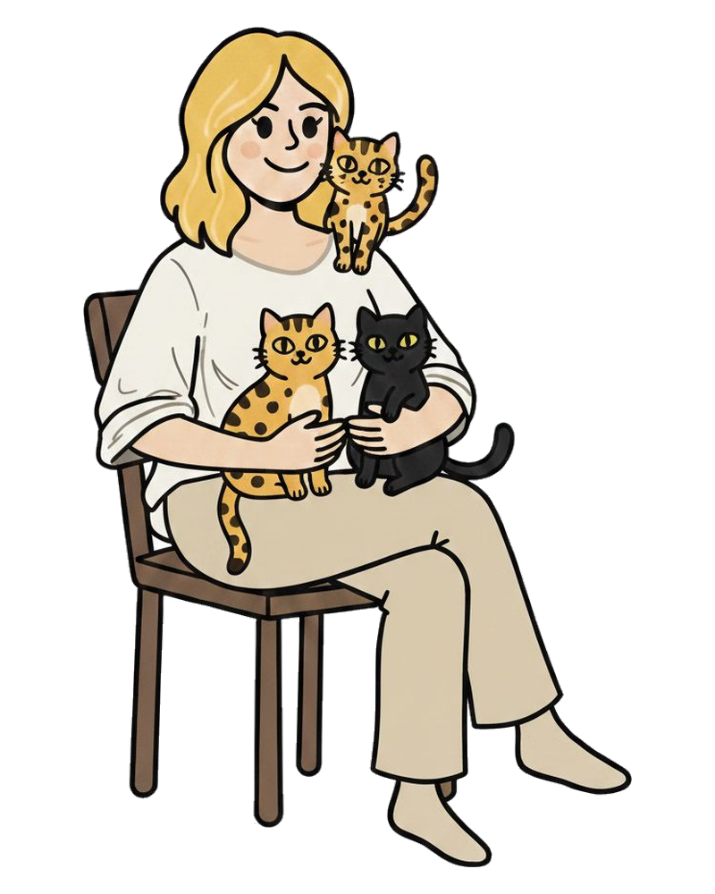
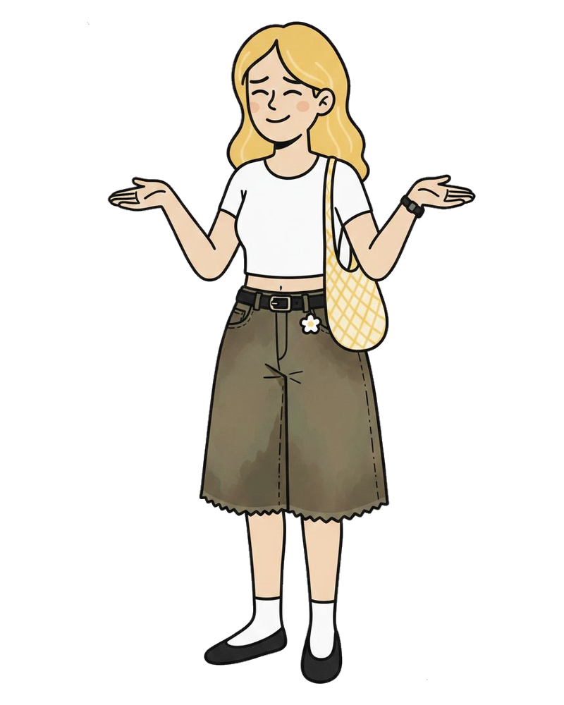
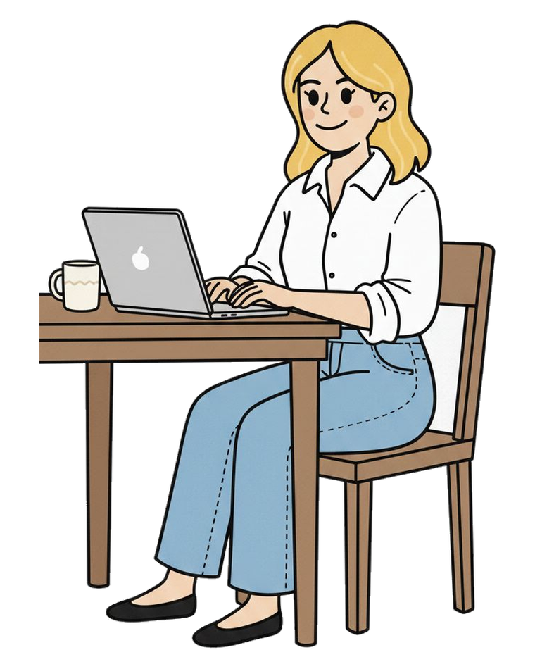
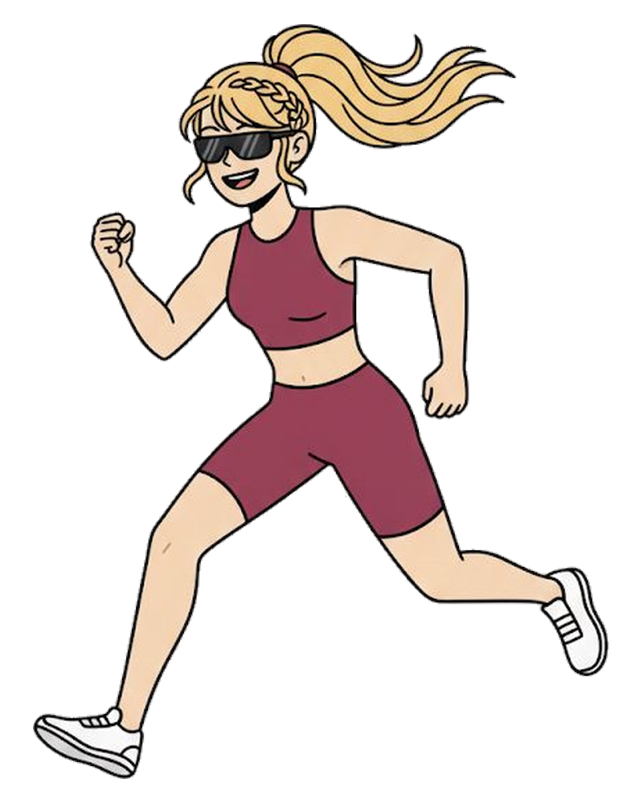
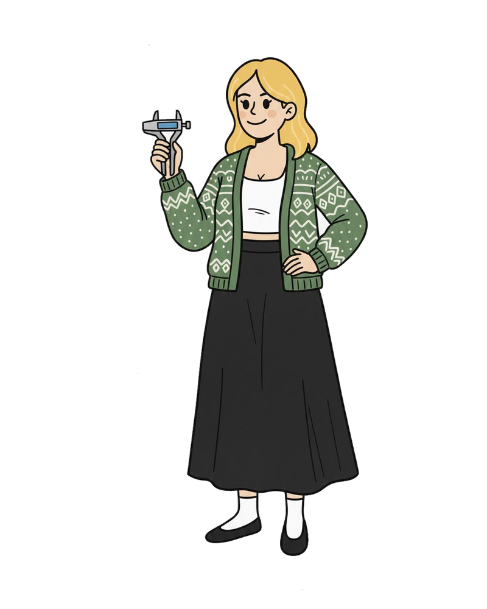
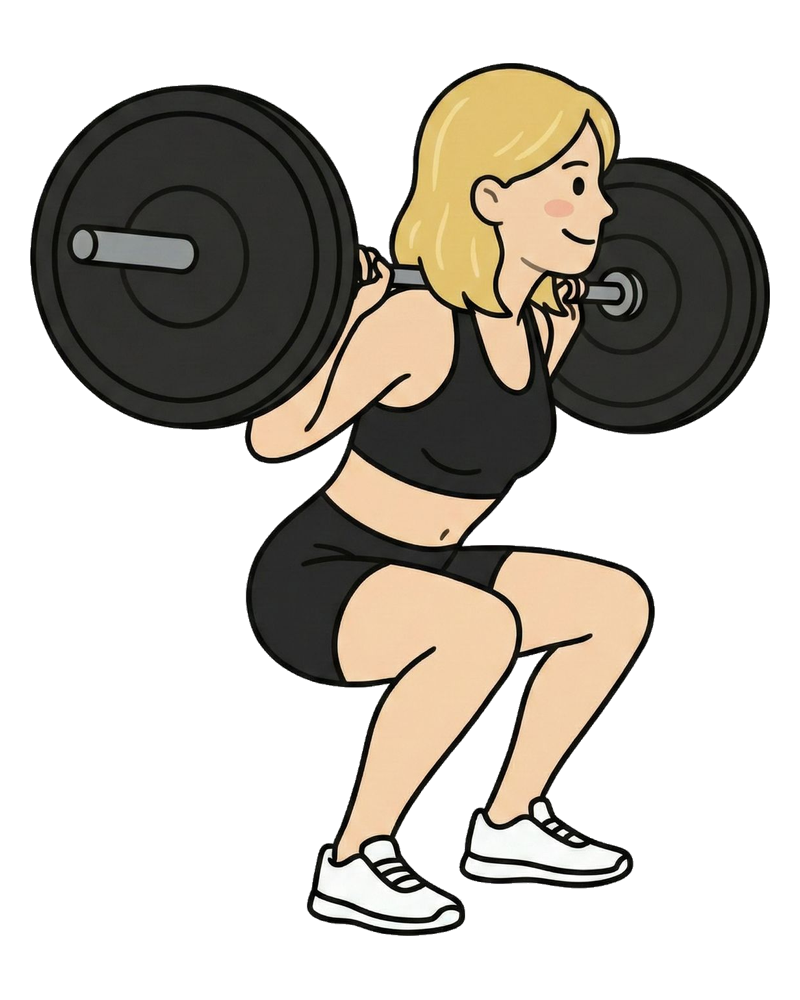
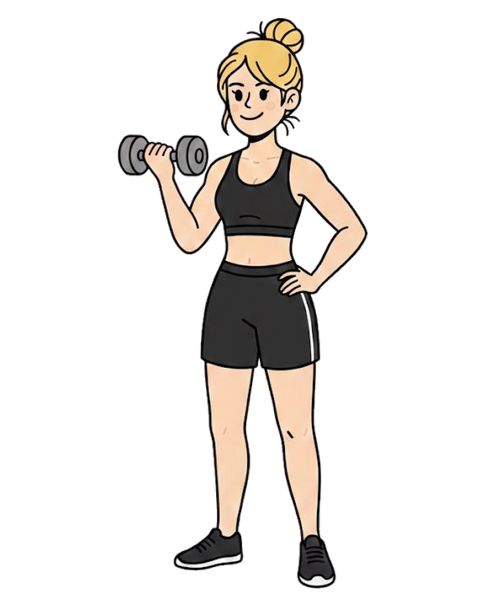

Valéria Schumann · Nutricionista em Caxias do SulSe você chegou até aqui, o primeiro passo, e talvez o mais corajoso, já foi dado.
Acompanhamento nutricional de verdade: sem fórmulas mágicas, sem terrorismo alimentar. Só ciência, acolhimento e um plano que cabe na sua vida.
Presencial em Caxias do Sul ou online pro mundo todo

Muito prazer, Valéria Schumann!
Nutricionista formada pela UCS, apaixonada por comida de verdade e por mostrar que comer bem não precisa ser chato, triste ou sem graça.
Acredito que dá pra comer bonito, gostoso e nutritivo ao mesmo tempo, e que ninguém precisa abrir mão do prazer de comer pra cuidar da saúde.
Meu trabalho é traduzir a ciência da nutrição em algo que faça sentido na sua rotina: sem terrorismo, sem neura, sem listas intermináveis do que "não pode". Aqui a gente come, a gente vive, e a gente evolui junto.
E sim, sou mãe de gato. Três, na verdade. Eles não opinam nos planos alimentares, mas dão apoio moral.
O que te espera por aqui

Nosso primeiro encontro
A primeira consulta é profunda: quero entender de verdade quem você é, como come, como vive, o que sente, o que quer mudar.
Não é aquela consulta genérica de 20 minutos com dieta impressa. É uma conversa de verdade, com escuta, com ciência e com um plano alimentar 100% personalizado.


Retornos
O retorno é onde a mágica acontece: a gente revisa, ajusta, celebra cada conquista e resolve o que não fluiu.
Inclui acompanhamento de evolução, avaliação antropométrica e ajustes no plano alimentar. Cada consulta é única porque você muda, e o plano muda com você.

Avaliação Antropométrica
Bioimpedância
Análise completa da composição corporal: massa magra, gordura, água corporal e metabolismo basal. Rápida e indolor.
Dobras Cutâneas
Método clássico com adipômetro para medir a gordura subcutânea em pontos estratégicos. Complementa a bioimpedância com dados localizados.
Inteligência Artificial
Tecnologia que cruza dados de múltiplas avaliações para gerar um panorama completo e personalizado da sua evolução.
Dúvidas frequentes
Quanto custa a consulta?
O valor é o mesmo no presencial e no online. O que muda é se você prefere consulta avulsa ou um pacote de acompanhamento. Me chama no WhatsApp que te passo os valores e as formas de pagamento, sem compromisso.
Onde fica o consultório?
Na Rua Ângelo Chiarello, 2811, sala 1303 (Centro Empresarial Recreio Cruzeiro), bairro Pio X, em Caxias do Sul. Se preferir, também atendo online.
Como funciona a consulta online?
É por videochamada no Google Meet: te mando o link no horário combinado, sem precisar instalar nada. A consulta é a mesma do presencial, e o plano alimentar personalizado chega em até 3 dias úteis.
Quanto tempo dura a consulta?
A primeira consulta dura até 2 horas, porque quero entender sua rotina, seu histórico e seus objetivos com calma. Os retornos duram cerca de 45 minutos.
Preciso levar exames?
Se você tiver exames de sangue recentes, leva (ou me manda antes) que eu analiso junto. Se não tiver, tudo bem: a gente vê na consulta se vale a pena pedir algum.
Vou ter que cortar tudo o que eu gosto?
Não! Aqui não tem lista de alimentos proibidos nem dieta restritiva. O plano é montado em cima da sua rotina e do que você gosta de comer, pra ser algo que você consegue manter de verdade.
Atende quem não é de Caxias do Sul?
Sim! Quem é da Serra Gaúcha (Farroupilha, Bento Gonçalves, Flores da Cunha…) pode vir até o consultório, e quem mora em qualquer outro lugar do Brasil ou do mundo pode fazer o acompanhamento online.
Como faço pra agendar?
É só me chamar no WhatsApp: (54) 99934-5681. Te respondo por lá, tiro suas dúvidas e a gente combina o melhor horário.
Ficou alguma outra dúvida? Me chama no WhatsApp
Consultório em Caxias do Sul
Atendo no Centro Empresarial Recreio Cruzeiro, no bairro Pio X. Se você é de Farroupilha, Bento Gonçalves, Flores da Cunha ou outra cidade da Serra, dá pra vir até aqui ou fazer tudo online.
Rua Ângelo Chiarello, 2811, sala 1303Centro Empresarial Recreio Cruzeiro · Pio X
Caxias do Sul · RS · 95032-460
Bora começar?
Sua saúde merece atenção de verdade, e tá a uma consulta (presencial ou online) de distância.
P.S.: Você merece se sentir bem no seu corpo. 💛

